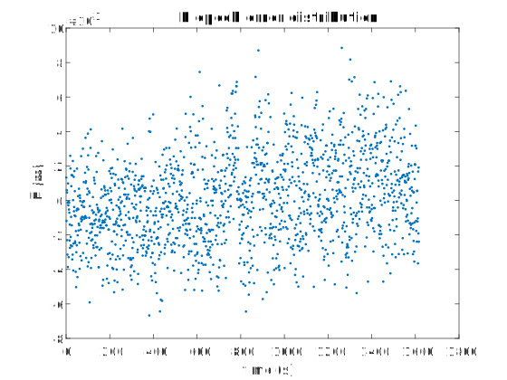
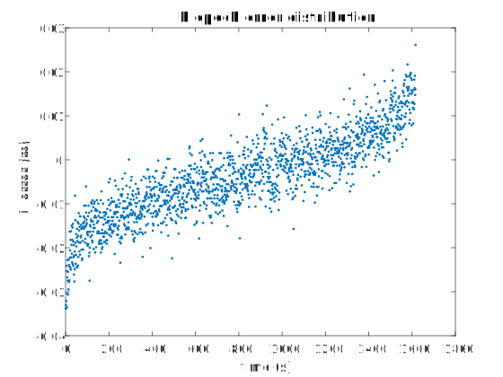
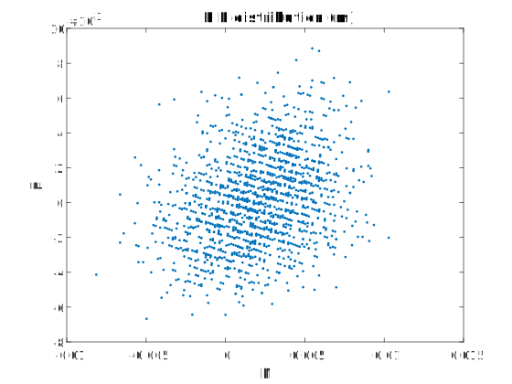
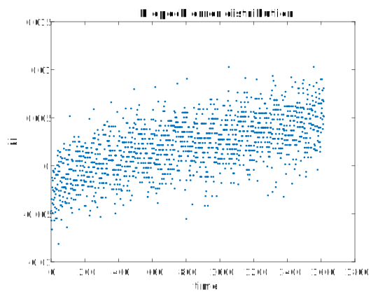
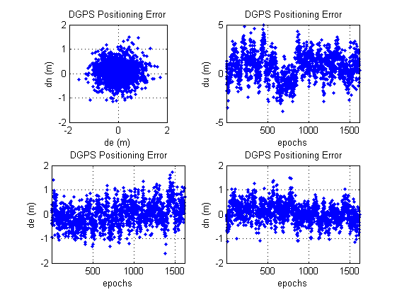

載波相對定位
使用 trimble bisness center 套裝軟體做載波相對定位。
座標轉換
trimble 所輸出的座標是 WGS84 座標， 以地心為原點的卡氏座標系統。 但座標真值是用 TWD97 座標表示， 需要將 WGS84 轉到 TWD97 或反之。
大部份人決定從 WGS84 轉到 TWD97 ， 因為用 TWD97 平面座標系統， 才能較明顯的看出各方向誤差分布意義。 且前幾次作業也是用 TWD97 的，可以直接比較。
之前助教給的程式中有函數可以從地心地固 X Y Z 轉到地心地固經緯度、橢球高。 又之前大地衛星測量實習這門課中， 有程式可以從 WGS84 經緯度座標 轉到 TWD97 平面座標。 總之就全部轉到了 TWD97 平面座標系統。
統計數據
| 種類 (m) | 南北方向 | 東西方向 | 高程方向 |
|---|---|---|---|
| 平均 | 0.002012412 | 0.0001031829 | -0.003862996 |
| 方均根 | 0.0035105656 | 0.002578235 | 0.0100330977 |
| 上次的虛擬距離差分定位方均根 | 0.3922 | 0.4852 | 1.5373 |
載波相位誤差圖




虛擬距離差分定位誤差圖

分析與心得
載波相位的精度相當高，到達厘米等級， 遠超過電碼定位精度。
在東西、南北方向隨時間的分布圖中， 可以看到資料分布成帶狀。 推測是因為載波相位最後從實數解 fix 為整數解， 所以只剩整數間就沒有資料， 只有整數有資料，也就是一條條的整數區域。